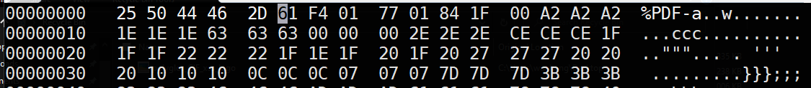

Join the following room on TryHackMe: https://tryhackme.com/room/linuxfundamentalspart1 . The room covers basic Linux commands for navigating directories and files (echo, whoami, cd, ls, cat, pwd, find, grep, wc, as well as operators &, &&, >, and >>). Complete the exercise.
- Take a screenshot showing completion of the room
Join the following room on TryHackMe: https://tryhackme.com/room/linuxfundamentalspart2 . The room covers additional file system commands (cp, mv, rm, file, touch) as well as commands to examine file permissions and system log data (/var/log). Complete the exercise.
- Take a screenshot showing completion of the room
There are several other basic operators and commands that administrators might use when managing Linux systems. One operator is the pipe (|). This operator takes the standard output of the preceding command and sends it to the standard input of the next one. An example is shown below in which a long listing of the system's log directory (/var/log) is performed, but its output is sent to grep in order to filter out only files with the string "auth" in them.
On your Kali VM, perform the command:
ls -l /var/log | grep auth
Another useful command is head, which returns the contents at the beginning of a file or standard input. An example is shown below which takes the long listing and returns only the first five lines. Perform the command.
ls -l /var/log | head -n 5
Sometimes you may want to use grep to filter out any lines that contain a particular expression. Passing the -v flag to grep does so. The /var/log directory contains logs of system daemons that are typically owned by the root account. However, other non-system log files are stored in the directory as well. Use the command below to show log files owned by other accounts.
ls -l /var/log | grep -v root
- What other users have directories in
/var/logon the VM?
While grep can be used for searching for strings in files as in the prior step, it is much more powerful when used with regular expressions (regex). The command supports a number of different regular expression languages including extended regular expressions (grep -E) and perl-compatible regular expressions (grep -P). For the examples below, we will apply extended regular expressions on a file on the Kali VM (/usr/share/wordlists/rockyou.txt) containing 14 million plaintext passwords that were dumped as part of the infamous RockYou breach.
^ and $
The ^ operator is used at the beginning of a regular expression to denote that the pattern match should begin at the start of a string while the $ operator is used at the end of a regular expression to denote that the pattern match should happen at the end of the string. For example, the regular expression ^abc matches any string that begins with the letters abc, while the regular expression def$ matches any string that ends with the letters def. Thus, an expression of ^abcdef$ would only match one string: abcdef.
Using a single command line, write a command using grep, head, and a pipe, that outputs the first three passwords of the RockYou password list that begin with the letters abc. Note that you should place the regular expression in quotes to prevent the shell from expanding it (e.g. grep -E "^abc" ...)
- Take a screenshot showing the command line and its output
Modify the command to find the number of passwords in the RockYou list that end with the letters def.
- Take a screenshot showing the command line and its output
Within expressions, it is convenient to be able to match multiple instances of characters. Regular expressions provide several ways for doing so.
? , + and *
The ? operator matches zero or one occurrences of the character that precedes it. Thus, the regular expression ^abc?$ will match both the string abc and the string ab. The + operator matches one or more occurrences of the character that precedes it. Thus, ^abc+$ will not match ab, but will match abc, abcc, abccc , etc. Finally, the * operator matches zero or more occurrences of the character that precedes it. Thus, ^abc*$ matches ab, abc, abcc, etc.
Use these three operators to develop regular expressions that search for passwords in the RockYou list that:
- Start with
abcdefollowed by an optionalfat the end. - Start with
abcdefollowed by one or morefcharacters at the end - Start with
abcdefollowed by zero or morefcharacters at the end
Search the RockYou list using each regular expression.
- Take a screenshot of the passwords returned for each one.
{n}
The curly braces act similar to the prior operators but allows one to specify an integer n that identifies the exact number of occurrences to match. For example, the expression ^a{20} will match any string that begins with 20 letters a. Using these braces, search the RockYou list for all passwords that begin with 19 letters q.
- Take a screenshot of the passwords returned for each one.
Within expressions, it is also convenient to be able to match against a set of characters via wildcards. Regular expressions provide several ways for doing so.
.
The . is a wildcard that matches any single character. It can be used in conjunction with the repetition operators or by itself. For example:
^a.c$: matches any 3-character string that begins withaand ends withc^a.{3}c$: matches any 5-character string that begins withaand ends withc^a.*c$: matches any string that begins withaand ends withc
Using the above, write a command that outputs all 10-character passwords in the RockYou list that begin with 3 letters of a and end with 3 letters of a.
- Take a screenshot showing the command line and its output
[]
While the . matches any single character, the square brackets can be used to identify a set of characters that can match a single character. The characters within the square brackets can be individually specified or specified as ranges using the - character. For example, [abcdef] and [a-f] are equivalent and match any of the first 6 letters of the alphabet in lowercase. Common sets of characters include:
[a-zA-Z]: matches any alphabetical character[a-zA-Z0-9]: matches any alphanumeric character[ -~]: matches any printable character (from the ASCII space character to the ASCII tilde character).
Within the square brackets, the ^ operator can be used to specify negation. This can be confusing since it has a different semantic meaning outside. Examples are shown below:
[^0-9]: matches any non-numeric character[^a-zA-Z0-9]: matches any non-alphanumeric character
Using the above, perform the following:
Write a command that outputs the number of passwords in the RockYou list that consist of only alphabetic characters.
- Take a screenshot showing the command line and its output
Write a command that outputs the number of numeric passwords with 6 digits in the RockYou list.
- Take a screenshot showing the command line and its output
Write a command that outputs the number of passwords that consist of all non-alphanumeric characters in the RockYou list.
- Take a screenshot showing the command line and its output
My password is in the RockYou list. It begins with o, ends with 4 numbers, and has a > character in it.
- Use grep to search the list and return my password. Take a screenshot of the command and its output.
One of the useful tasks the find command is used for is to search the file system for any modified files. Such files may indicate tampering by an adversary. For example, system configuration files in /etc control how many of the system services operate. Begin by creating an empty "backdoor" script in /etc/cron.daily that will run everyday.
touch /etc/cron.daily/backdoor.sh
We will now attempt to track it down using find. There are several helpful flags that can find files based on their last modification. The -newermt takes a formatted date given via the year (YYYY), month (MM), and day (DD), and finds all files that have been modified more recently than that date.
Fill in the time format using yesterday's date and run the command.
find /etc -newermt YYYY-MM-DD
- Take a screenshot of the command showing that the file is returned as part of the output
We can also specify files older than a particular date via -not -newermt. Together with the prior flag, they can specify a range. For example, the command below finds all files that were last modified on New Year's day of 2022.
find /etc -newermt 2022-01-01 -not -newermt 2022-01-02
find supports two other flags that specify ranges relative to the current time. In particular, -mmin with a negative offset returns the files that have been changed in the last number of minutes while -mtime with a negative offset returns the files that have been changed in the last number of days. Run the following commands to list all files that have changed within the last 5 minutes and all files that have changed within the last day. Redirect the output to separate files.
find /etc -mmin -5 > /tmp/1.txt find /etc -mtime -1 > /tmp/2.txt
Then, run a diff on the output files to see the files that have been last modified between 5 minutes and 1 day ago.
diff /tmp/1.txt /tmp/2.txt
- Take a screenshot of the result
Sometimes, it is useful to be able to execute a particular command on each file found. find supports a syntax for doing so via the -exec flag. Suppose you wanted to record a hash of each file in /etc that has changed in the last day. The command below does so by searching /etc for only files with -type f, and then passing the individual results to sha256sum via the {} syntax to execute the hash command. A semicolon ends the -exec flag, but must be escaped so that the shell does not interpret it. Run the command and see that it returns the hashes of files that have been modified.
find /etc -type f -mtime -1 -exec sha256sum {} \;
The above syntax causes sha256sum to be invoked on each file. Sometimes, one may wish to take the entire set of results and pass it as one long set of arguments to a subsequent command. The xargs command takes the standard output of a command as its input and passes it as an argument to another command. For example, if one wanted to do a long listing of the files returned by find, only a single ls with the returned files as arguments is needed. In the command below, xargs takes the output of find and passes it to ls as arguments.
find /etc -type f -mtime -1 | xargs ls -l
- Take a screenshot of the output showing every file that has been modified within the last day
With appropriate privileges, there are many ways adversaries can tamper with the system to prevent their files from being detected using file modification times. Some approaches that have been used include (from most sophisticated to less sophisticated).
- Use a kernel-mode rootkit to modify the operating system code so that malicious files are removed from any file system calls
- Use a library rootkit to modify system libraries to remove malicious files from library calls
- Use a binary or user-mode rootkit to modify the
findbinary to remove malicious files from returned results - Change the access times on the malicious files to evade detection using file timestamps
We will now demonstrate the last one of these techniques. To begin with, delete and recreate the backdoor file.
rm /etc/cron.daily/backdoor.sh touch /etc/cron.daily/backdoor.sh
Look for the file using a find command to search for files modified within the last 30 minutes.
find /etc -mmin -30 -exec ls -ld {} \;
On Linux, the file system typically tracks each file's last access time, last modification time, and its creation time using separate timestamps. As it turns out, we can use touch to modify these file timestamps in order to hide them from our previous searches using find. Examine the man page for touch.
- Which flag should be used to change the access time of a file? Which flag should be used to change the last modification time of a file? What flag allows you to specify a date string to modify the times with?
Using touch, create a command that changes the timestamp of the backdoor.sh file to a year ago on this date. Use the command to change the timestamp of backdoor.sh, then perform a listing showing its new timestamp and repeat the find command to verify the script no longer appears.
touch <FMI> /etc/cron.daily/backdoor.sh
ls -l /etc/cron.daily/backdoor.sh
find /etc -mmin -30 -exec ls -ld {} \;
- Take a screenshot showing the output of the above commands.
Identifying files is typically done using heuristics either via file extension or by examining the initial bytes of the file. Unfortunately, such heuristics can be subverted to trick a system into believing a file is a particular type, but is actually another one as well. A library of polyglots can be found here.
In a web browser, bring up the following two URLs from the course site. The files are identical on the web server (via hard-link), but differ in their file extensions with one indicating it is a GIF image file and one indicating it is a PDF file.
https://thefengs.com/wuchang/courses/cs491/files/GIF+PDF.gif
https://thefengs.com/wuchang/courses/cs491/files/GIF+PDF.pdf - Who authored this polyglot file?
Bring up the Kali VM. The curl -I command can be used to simulate the retrieval of a URL on a server, without actually fetching its content. It will return important information about the file in HTTP headers indicating its type (Content-Type), its size (Content-Length), its last modification time (Last-Modified), and its hash (ETag). Run the command on both URLs above.
- Which values are identical? Which values are different?
- Does the web server use a file extension heuristic or a file content heuristic to determine the
Content-Type?
Download the polyglot file to your Kali VM to a file called polyglot.gif.
curl -o polyglot.gif <URL>
Use the file command to view its filetype and the xxd command to dump out the beginning of the file in a hexdump format to show the GIF header.
file polyglot.gif xxd polyglot.gif | head -2
Change the file extension to PDF and repeat the file command on the renamed file.
mv polyglot.gif polyglot.pdf file !$
- Does the file command use a file extension heuristic or a content-based heuristic to determine the file's type?
Simple modifications to the bytes at the beginning of a file can change the file type that the file command reports. We can modify the bytes in the file using the hexedit tool. Bring the file up in hexedit.
hexedit polyglot.pdfPDF files begin with the string "%PDF-". In hexadecimal, the 5 bytes have an ASCII hex encoding of "25 50 44 46 2D". Type these values directly into hexedit to modify the first 5 bytes of the file as shown below:

Then, type "Ctrl+x" and save the file. Re-run the file command on the modified file.
file polyglot.pdf- Take a screenshot showing the output of the command indicating its new filetype.